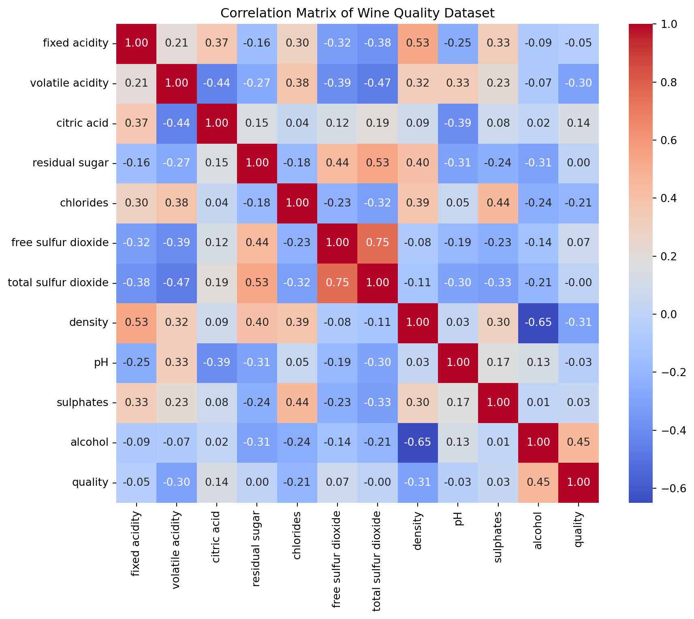
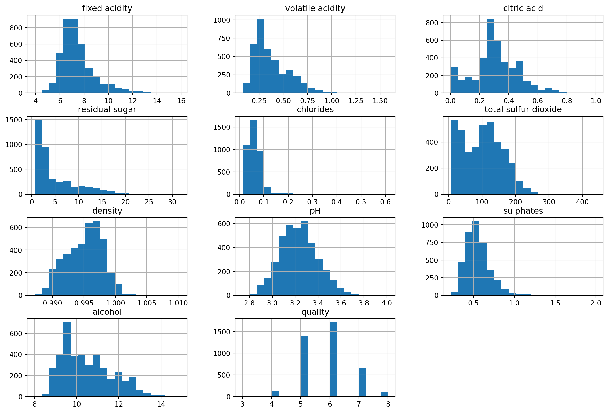
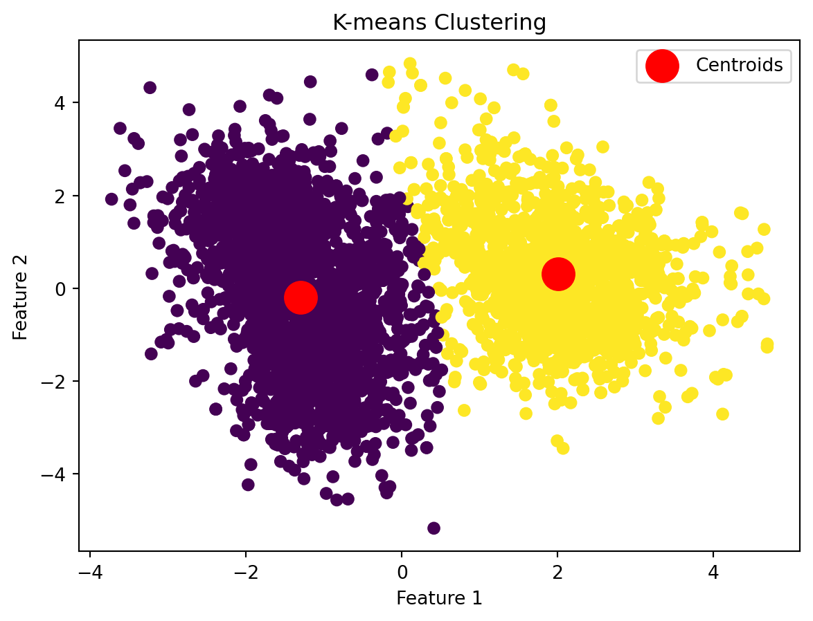

import numpy as np
class kMeans():
def __init__(self, K, X):
self.K = K
self.centroids = X[np.random.choice(X.shape[0], size=K, replace=False)]
self.assignments = np.zeros(X.shape[0], dtype=int)
self.X = X
def update_centroids(self, closest_centroids):
'''This method will update the stored centroids according to the new clusters '''
X_grouped = [self.X[closest_centroids == idx] for idx in range(len(self.centroids))]
self.centroids = [X.mean(axis=0) for X in X_grouped]
def find_cluster(self):
''' This method will iteratively search for clusters'''
while True:
distances = np.array([np.linalg.norm(self.X - centroid, axis=1) for centroid in self.centroids]).T
closest_centroids = np.argmin(distances, axis=1)
if np.array_equal(closest_centroids,self.assignments):
break
else:
self.update_centroids(closest_centroids)
self.assignments = closest_centroids
return self.assignmentsVignette Abstract
This project utilizes the UC Irvine Wine Quality dataset to illustrate the impact of k-means clustering, a form of unsupervised learning that groups data points into clusters based on feature similarity and their proximity to the centroid. The dataset contained information about different wines, including their color, pH, residual sugar, density, and more. Using K-means clustering, we were able to predict the color of wine, red or white, based on a variety of factors. Ultimately, our model achieved an accuracy of 0.9763, with only 32 red wines and 60 white wines mis-classified out of 6947 total observations.
K-Means Clustering: Conceptual Overview
K-means clustering is a form of unsupervised learning that divides n observations into k groups, called clusters.
The split of data into groups is unknown, and the data points fall into a certain cluster based on the mathematical distance measurement from the center of the cluster. In most instances, the mathematical distance measurement is Euclidean, with the mean or median of the cluster being the determining factor of whether or not a data point belongs.
Clusters are then randomly assigned a centroid, or center, in the space. Each data point is then assigned to one of the clusters. After assigning each point to one of the clusters, new centroids are assigned. This is repeated until a “good” cluster is found.
An apt division minimizes the variation within each cluster with maximized variation between each cluster. This means we want data points within a cluster to be similar to each other, but we also want the data points of each cluster to be distinctly different from other clusters, so that clusters formed by k-means clustering are “compact and isolated”.
K-means algorithm
The process for K-means clustering is as follows:
1. initialize K: set k equal to the number of clusters desired
2. Assign centroids:
- Expectation step: assign data points to closest centroid based on predetermined measurement of distance
- Maximization step: reassigns center of cluster based on mean of data points in cluster
Expectation and maximization steps repeat until we reach convergence.
Here, we have code for the manual implementation of k-means clustering, showing each step of the k-means clustering algorithm in Python.
We start by initializing K, the number of clusters, and selecting K random data points from the dataset as the initial centroids. We also initialize a vector of assignments that is the same length as the dataset to store the cluster assignment for each data point. The dataset itself is stored as X. To find clusters, we call find_cluster, which enters a loop that runs until the algorithm converges. At each iteration, the distances from every data point to each centroid are calculated, resulting in a matrix where rows represent data points and columns represent centroids. Each data point is then assigned to the closest centroid. Convergence is checked by comparing the current assignments with those from the previous iteration—if they are the same, the algorithm stops and returns the cluster assignments. If not, we call update_centroids. In this method, the centroids are updated by grouping data points by their current assignments and recalculating the mean position of each cluster, which becomes the new centroid. This process repeats until the cluster assignments match those of the previous iteration.
Let’s check that this works on a simple example. We will create some simulated two-feature gaussian data. To create two distinct clusters, we add 3 to the first dimension and subtract 4 from the second dimension of the of 25 observations.
np.random.seed (0)
X = np.random.standard_normal ((50 ,2))
X[:25 ,0] += 3
X[:25 ,1] -= 4Now we apply our algorithm, searching for the two clusters. To check the accuracy of the clustering, we first create our ground truth labels. We have to remember though, the assignments of clustering by the algorithm will not necessarily match the ground truth labels. To circumvent this problem, we map the predicted cluster labels to the ground truth labels using the mode of the true labels in each predicted cluster. Then we calculate the accuracy.
from scipy.stats import mode
cluster = kMeans(2, X)
predicted_labels = cluster.find_cluster()
true_labels = np.array([0] * 25 + [1] * 25)
label_mapping = {}
for cluster in np.unique(predicted_labels):
cluster_indices = np.where(predicted_labels == cluster)[0]
most_common_label = mode(true_labels[cluster_indices], keepdims=True).mode[0]
label_mapping[cluster] = most_common_label
mapped_labels = np.array([label_mapping[label] for label in predicted_labels])
accuracy = np.sum(mapped_labels == true_labels) / len(true_labels)
print(accuracy)0.98Our algorithm was 98% accurate!
Practical Example
Before we begin, we will start by loading in the necessary libraries.
import sklearn as sk
import pandas as pd
import matplotlib.pyplot as plt
import seaborn as sns
import numpy as np
from sklearn.cluster import KMeansDataset Description:
We will show an example of running the k-means clustering algorithm on the Wine Quality from UC Irvine. This dataset contains wine quality data, with features such as citric_acid, density, pH, and more. The response variable of this dataset is wine_quality, which is rated on a scale from 0-10. This dataset is split into 2 sub-datasets, one regarding red wine and one regarding white wine. Since k-means clustering is best suited to classification tasks, we will attempt to group the data into red wine and white wine rather than predicting wine_quality.
We will start by creating the response variable color for each dataset and then merging the two datasets into one.
red = pd.read_csv('data/winequality-red.csv', sep=';', header=0)
white = pd.read_csv('data/winequality-white.csv', sep=';', header=0)
red['color'] = 'red'
white['color'] = 'white'
wine_data_concat = pd.concat([red, white], axis=0)
print(len(wine_data_concat))
print(pd.value_counts(wine_data_concat['color']))6497
color
white 4898
red 1599
Name: count, dtype: int64C:\Users\hanna\AppData\Local\Temp\ipykernel_2760\4123264359.py:9: FutureWarning: pandas.value_counts is deprecated and will be removed in a future version. Use pd.Series(obj).value_counts() instead.
print(pd.value_counts(wine_data_concat['color']))We now have one dataset wine_data that has 6947 observations total, with 4898 white wine observations and 1599 red wine observations. This is quite unbalanced and can cause lots of problems when we apply our k-means algorithm. For the purposes of this exercise, we will drop some of the white wine samples so that the proportion is 40/60 red to white rather than 23/77.
from sklearn.utils import resample
desired_white_count = int(len(red) * (60 / 40)) # Adjust white count to achieve 40-60 balance
white_downsampled = resample(
white,
replace=False,
n_samples=desired_white_count,
random_state=42
)
wine_data = pd.concat([red, white_downsampled], axis=0)
wine_data = wine_data.sample(frac=1, random_state=42).reset_index(drop=True)Code Implementation
Process: First, we concatenate the white wine and red wine datasets. Then, we embark on data preprocessing, such as potentially dropping some of the white wine samples so that the data is more balanced. This is followed by Exploratory Data Analysis to understand the variables using histograms of variable distribution and heatmaps to understand variable correlation. We then normalize and standardize the variables with strongly skewed distributions and outliers using log transformation and other methods, before applying the k-means clustering algorithm.
Goal: To predict the color of wine based on a variety of factors, such as pH, alcohol level, and more.
Outcomes:
- Cluster Assignments: Each wine sample will be assigned to a cluster based on its properties
- Information from Centroids: The centroids of each cluster may provide information on the differences between red and white wines (i.e. one cluster may have higher density, which is indicative of red wines)
Impact of K-means Clustering: Relationships observed during EDA can be reflected in distinct centroids and important features are highlighted through clustering
Exploratory Data Analysis
Prior to applying the algorithm to our data, we should first explore the dataset to get an idea of the structure of this dataset.
First, let us take a look at the correlations between features.
correlation_matrix = wine_data.drop(columns=['color']).corr()
plt.figure(figsize=(10, 8))
sns.heatmap(correlation_matrix, annot=True, fmt=".2f", cmap='coolwarm', cbar=True)
plt.title('Correlation Matrix of Wine Quality Dataset')
plt.show()
There are a few relationships to note. The highest correlated variables are total sulfur dioxide and free sulfur dioxide, which exhibit a positive correlation. This makes sense as total sulfur dioxide is usually calculated the sum of free sulfur dioxide and bound sulfur dioxide. This could support an argument for dropping one of these predictors from our analysis, since they are directly correlated, leaving both of these variables in could lead to multicollinearity and issues when we apply our algorithm. We can therefore drop free sulfur dioxide.
wine_data = wine_data.drop(columns=['free sulfur dioxide'])Another relationship of note is the negative correlation between density and alcohol. This is another expected relation as higher ABV liquids are generally less dense. However, density could also be impacted by residual sugar, pH, or volatile acidity, which are potential determining factors for the classification of wine color, so density might be an important variable to keep.
HISTOGRAMS
wine_data.hist(bins=20, figsize=(15, 10))
plt.show()
For each numerical variable, we generated histograms to visualize the distribution and analyze the spread of data. This analysis will help us identify patterns in the data, such as symmetry, skewness, and outliers, which will help us determine what data preprocessing should be done in order to create the best k-means algorithm. For example, the graphs show us that many of the variables, such as fixed acidity, volatile acidity, residual sugar, chlorides, and sulphates, are heavily right-skewed, indicating that we might need to normalize or scale these features before applying the algorithm, potentially through log-transformation or other methods. Additionally, variables like residual sugar, total sulfur dioxide, and alcohol have long right tails, which indicate the presence of significant outliers. Because of these outliers, we could run into issues with the clustering results if we don’t address them. Lastly, pH, quality, and density all have more symmetric, bell-shaped distributions than the other variables, which are indicators that these would be good features to include in k-means clustering.
Data Preprocessing
Now that we have conducted our EDA, we know how to move forward with our data preprocessing. We will first be removing outliers, as the graphs show that there are significant and extreme outliers in the distributions of some of the variables. We will then be log transforming and square root transforming the remaining variables to get rid of any right-skewedness the variables may still have.
Outlier Removal
Outliers are an issue when it comes to applying a clustering algorithm like K-means. Their presence can distort the centroid of the cluster, pulling them away from most of the data points. In order to address this, we should remove the extreme outliers before transformation so we don’t accidentally amplify them.
def remove_extreme_outliers_iqr(data, column, multiplier=3):
Q1 = data[column].quantile(0.25)
Q3 = data[column].quantile(0.75)
IQR = Q3 - Q1
lower_bound = Q1 - multiplier * IQR
upper_bound = Q3 + multiplier * IQR
return data[(data[column] >= lower_bound) & (data[column] <= upper_bound)]
# Remove only extreme outliers
columns_to_clean = ['fixed acidity', 'volatile acidity', 'chlorides', 'sulphates']
for col in columns_to_clean:
wine_data = remove_extreme_outliers_iqr(wine_data, col, multiplier=3)Scaling and Normalizing variables
We have determined through manual inspection of the graphs that some variables definitely need transformation and normalization. To determine exactly which ones need this, we can run the skew function, which calculates the Fisher-Pearson coefficient of skewness.
numerical_columns = wine_data.select_dtypes(include=['number'])
skewness = numerical_columns.skew()
print(skewness)fixed acidity 1.212146
volatile acidity 1.095816
citric acid 0.207517
residual sugar 1.451397
chlorides 1.294793
total sulfur dioxide 0.258585
density -0.204928
pH 0.356638
sulphates 0.841344
alcohol 0.594343
quality 0.217017
dtype: float64This analysis confirms our initial thought that chlorides, fixed acidity, volatile acidity, residual sugar, sulphates, and alcohol are the most heavily skewed, even after outlier removal. We will be using log transformation on most variables and square root transformation on the other 2.
We will first be dealing with the most heavily skewed variables. We will be using log transformation to normalize these variables.
# Log transformation for heavy skew
log_transform_vars = ['residual sugar', 'fixed acidity', 'volatile acidity', 'chlorides']
for col in log_transform_vars:
wine_data[col] = np.log1p(wine_data[col])We will then be dealing with the moderately skewed variables, using square root transformation.
# Square root transformation for moderate skew
sqrt_transform_vars = ['sulphates', 'alcohol']
for col in sqrt_transform_vars:
wine_data[col] = np.sqrt(wine_data[col])We will be leaving all variables with a skewness less than 0.5 unchanged, as those are close to symmetric distributions. We can recheck the skewness of the variables after the transformation to see if they are more normalized.
skewness = numerical_columns.skew()
# Print skewness values
print(skewness)fixed acidity 1.212146
volatile acidity 1.095816
citric acid 0.207517
residual sugar 1.451397
chlorides 1.294793
total sulfur dioxide 0.258585
density -0.204928
pH 0.356638
sulphates 0.841344
alcohol 0.594343
quality 0.217017
dtype: float64We have now run transformation on all of the skewed variables. Though volatile acidity, fixed acidity, and chlorides are still moderately to heavily skewed, they have improved from previously, and it is important to not over-transform the variables because we can then lose valuable information about the variables and distort the data.
from sklearn.cluster import KMeans
from sklearn.preprocessing import StandardScaler
from sklearn.metrics import silhouette_score
from sklearn.model_selection import train_test_split
features = wine_data.drop(columns=['color'])
scaler = StandardScaler()
wine_scaled = scaler.fit_transform(features) The next step is to apply PCA reduction to the data. This will reduce the dimensionality of the dataset, making it easier to visualize and analyze. PCA is particularly useful when performing K-means clustering because it removes redundancy and noise by capturing the most important variance in the data with a smaller set of features. Focusing on the principal components can improve the performance of K-means by emphasizing meaningful patterns in the data.
from sklearn.decomposition import PCA
# Apply PCA to reduce dimensions
pca = PCA(n_components=2)
wine_pca = pca.fit_transform(wine_scaled)Now that our data pre-processing is done, we can fit our model. We do this with the sklearn package instead of our manual implementation. This is because, practically, it is much more convenient to use a package that is set up to take in complex datasets like the one we have, rather than manually adjusting the algorithm we wrote to fit to whatever dataset we want to use it on. The manual implementation is useful for understanding how K-means clustering works, but in practice it makes more sense to use a pre-built package.
#initializes k-means model
kmeans = KMeans(n_clusters=2, init='k-means++', random_state=42)
kmeans.fit(wine_pca)
# adds k-means cluster labels
wine_data['cluster'] = kmeans.labels_Now that we have our clusters, we want to understand a bit more about their structure. We can do this by calculating their inertia and silhouette scores. The inertia score is a measure of how tightly clustered the data points are around their respective centroids in K-means clustering. Lower inertia indicates that the clusters are more compact and well-defined. The silhouette score evaluates the quality of clustering by measuring how similar a data point is to its own cluster compared to other clusters. The score ranges from -1 to 1, where a score closer to 1 represents well defined clusters, a score closer to 0 represents overlapping clusters, and a negative score represents possible misclassification of data points to clusters. Finally, we plot our clusters to get a sense for them visually.
# evaluates inertia and silhouette scores of model
print("Inertia:", kmeans.inertia_)
silhouette_avg = silhouette_score(wine_pca, kmeans.labels_)
print("Silhouette Score:", silhouette_avg)
# visualizes clusters
plt.scatter(wine_pca[:, 0], wine_pca[:, 1], c=kmeans.labels_, cmap='viridis')
plt.scatter(kmeans.cluster_centers_[:, 0], kmeans.cluster_centers_[:, 1], s=300, c='red', label='Centroids')
plt.xlabel("Feature 1")
plt.ylabel("Feature 2")
plt.title("K-means Clustering")
plt.legend()
plt.show()Inertia: 11332.243323710076
Silhouette Score: 0.46612856833586713
We have an inertia score of ~11332. Inertia can range from 0 to infinity and is not normalized. This can make it a bit hard to interpret, as the value depends greatly on the given dataset. When we look at our diagram, we can see that our centroids are fairly well defined and compact. We would argue that based on this dataset, we can accept this inertia score to be sufficiently low. Our silhouette score is ~0.46, which is pretty good. We can see some overlap of our clusters in our plot, but the clusters are quite distinct nonetheless.
Since we have the true class labels, we can calculate how accurate the K-means clustering was in grouping the the red wines and white wines. We create a crosstab which shows the relationship between actual wine colors and K-means cluster assignments. We can see that only 32 red wines were misclassified and 60 white wines were misclassified by the algorithm.
# Compares actual wine colors to predicted k-means labels
pd.crosstab(wine_data['color'], wine_data['cluster'])| cluster | 0 | 1 |
|---|---|---|
| color | ||
| red | 32 | 1469 |
| white | 2323 | 60 |
Finally, we calcualte the accuracy.
# Calculate accuracy of k-means model
total_wines = wine_data.shape[0] # Total number of wines
correctly_classified = 1469 + 2323 # Wines in correct clusters
accuracy = correctly_classified / total_wines
print(f"Clustering accuracy: {accuracy * 100:.2f}%")Clustering accuracy: 97.63%We end with an accuracy of 97.63%, which is exceptionally good!
References
Coburn, K. (2024). Unsupervised learning: K-means clustering [Lecture]. University of California, Santa Barbara.
Cortez, P., Cerdeira, A., Almeida, F., Matos, T., & Reis, J. (2009). Wine Quality [Dataset]. UCI Machine Learning Repository. https://doi.org/10.24432/C56S3T.
IBM. (n.d.). K-means clustering. Retrieved December 3, 2024, from https://www.ibm.com/topics/k-means-clustering GeeksforGeeks. (2024).
K means Clustering - Introduction. Retrieved December 3, 2024, from https://www.geeksforgeeks.org/k-means-clustering-introduction/